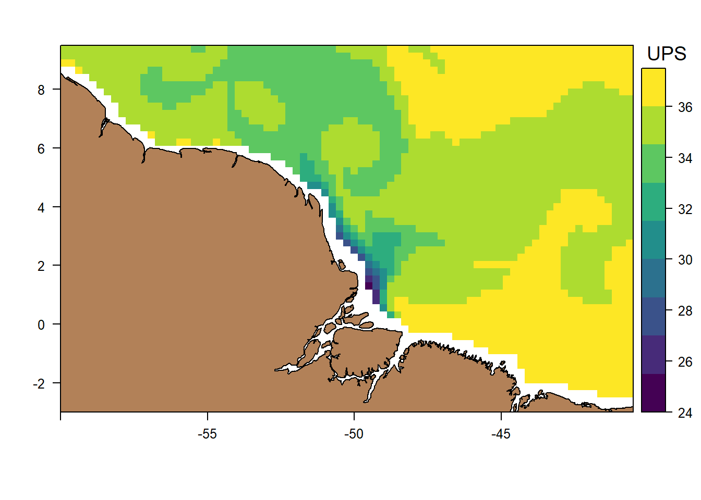

#Empieza aquí el verdadero trabajo
library(ncdf4)
library(raster)
library(sp)
library(sf)
library(terra)
library(RColorBrewer)
library(rasterVis)
library(spDataLarge)
library(lwgeom)
library(mapdata)
library(latticeExtra)
library(magick)
library(RColorBrewer)
library(scales)
library(lwgeom)
library(mapdata)
library(viridis)En esta publicación voy a explicar como hacer una animación de corrientes oceánicas y salinidad con datos en formato NetCDF correspondientes a la desembocadura del río Amazonas con el lenguaje de programación R.
Activación de librerías de R para manejo y visualización de datos geográficos.
Extracción de las variables del archivo NetCDF
El archivo NetCDF tiene variables de temperatura, salinidad, batimetría, componente zonal, componente meridional, altimetría y densidad , entre otras. Y las variables globales latitud, longitud, tiempo y profundidad que son datos estructurados en forma de vector y que sirven para darle estructura e indexar a las anteriores variables mencionadas (temperatura, densidad, salinidad etc…) las cuales están estructuradas en formato de arreglo con 4 dimensiones : longitud, latitud, profundidad y tiempo. Este archivo NetCDF puede ser descargado aquí.
#Se especifica la direccion de la base de datos NetCDF
dirsemanal = "A:/CICIMAR/Bases de datos/Output file of weekly climatology simulated with the ROMS model (NetCDF standard).nc"
#se le asigna a una variable la lectura de esos datos
semanal = nc_open(dirsemanal)
#Se muestra en pantalla las variables que presenta la base de datos,
#y sus dimensiones
print(semanal) #consultando metadatos del ficheroFile A:/CICIMAR/Bases de datos/Output file of weekly climatology simulated with the ROMS model (NetCDF standard).nc (NC_FORMAT_CLASSIC):
9 variables (excluding dimension variables):
double h[lon,lat]
standard_name: Bathymetry
long_name: Bathymetry
units: m
missing_value: NaN
FillValue: NaN
double ssh[lon,lat,time]
standard_name: SSH
long_name: Sea Surface Height
units: m
missing_value: NaN
FillValue: NaN
double temp[lon,lat,depth,time]
standard_name: temp
long_name: Potential temperature
units: degreeC
missing_value: NaN
FillValue: NaN
double salt[lon,lat,depth,time]
standard_name: salt
long_name: Salinity
units: PSU
missing_value: NaN
FillValue: NaN
double swd[lon,lat,depth,time]
standard_name: Density
long_name: Seawater density
units: Kg m^-3
missing_value: NaN
FillValue: NaN
double ucurr[lon,lat,depth,time]
standard_name: ucurr
long_name: Zonal component
units: m s^-1
missing_value: NaN
FillValue: NaN
double vcurr[lon,lat,depth,time]
standard_name: vcurr
long_name: Meridional component
units: m s^-1
missing_value: NaN
FillValue: NaN
double vort[lon,lat,depth,time]
standard_name: vort
long_name: Vorticity
units: s^-1
missing_value: NaN
FillValue: NaN
double cspd[lon,lat,depth,time]
standard_name: cspd
long_name: Current speed
units: m s^-1
missing_value: NaN
FillValue: NaN
4 dimensions:
lon Size:183
standard_name: logitude
long_name: logitude
units: degrees_east
axis: X
lat Size:159
standard_name: latitude
long_name: latitude
units: degrees_north
axis: Y
depth Size:61
standard_name: Depth
long_name: Vertical axis
units: m
axis: Z
time Size:48 *** is unlimited ***
standard_name: time
long_name: time
calendar: standard
axis: T
comment:
5 global attributes:
creation_date: 05-Aug-2022 01:24:56
Producer: DOCEAN/UFPE/Recife/PE/Brasil
dataType: 2D Grid
Comment: ArpHDv2 datasets (standard NetCDF files)
Author: H. L. Varona & M. Araujo#Una vez visto cuales son las cadenas con las que se nombran a las variables globales
#procedemos a asignarlas a variables para su posterior extracción del archivo NetCDF
lat_variable = 'lat'
lon_variable = 'lon'
time_variable ='time'
deepvariable= 'depth'
# Extracción de las variables globales
latssem = ncvar_get(semanal,lat_variable)
lonssem = ncvar_get(semanal,lon_variable)
timessem = ncvar_get(semanal,time_variable)
deepseem=ncvar_get(semanal,deepvariable)
#En esta publicación solo vamos a usar la salinidad y los componentes zonales y meridionales para visualizar la magnitud y dirección de las corrientes de los datos
salisem = ncvar_get(semanal,"salt")
zonal=ncvar_get(semanal,"ucurr")
meridional=ncvar_get(semanal,"vcurr")
#Definimos un cuadrante de interes: en las longitudes desde -60 hasta los -40.5 , y en las latitudes desde las -3 hasta las 9.5
lon1=-60
lon2=-40.5
lat1=-3
lat2=9.5
#Debemos saber que índice ocupan nuestras coordenadas de interes en las variables globales, por eso aplicamos wich para obtener dichos índices en las variables globales.
#Estos índices serán empleados para indexar las variables ambientales (eg. salinidad) en las dimensiones 1 y 2, que corresponden a las longitudes y latitudes respectivamente.
indlon1=which(lonssem==lon1)
indlon2=which(lonssem==lon2)
indlat1=which(latssem==lat1)
indlat2=which(latssem==lat2)
#Acotando el rango de las variables de latitudes y longitudes para que pueda ser empleado correctamente con las funciones de rastervis
#De las variables globales longitud y latitud vamos a extraer unas secciones de estas
#correspondientes a nuestra region de interes
#Estos vectores ranlon y ranlat serán utilizados posteriormente para georeferenciar los rasters que se elaboran a partir de las matrices o arreglos de la variable salinidad
ranlon=lonssem[indlon1:indlon2]
ranlat=latssem[indlat1:indlat2]Acote de área de interes, rasterización y georeferenciación de las capas de salinidad
Una vez tenemos las 48 capas de tiempo de la variable de salinidad rasterizada y georeferenciada, podemos proceder a visualizar la capa numero 24 de 48. La cual podemos acceder a ella dentro del elemento 24 de la lista vacía creada para almacenar los rasteres georeferenciados de salinidad
#Creamos una secuencia que se usará para asignar rangos a la variable de salinidad.
#Desde los 24 UPS (Unidades prácticas de salinidad), hasta los 38 UPS, con saltos de 1.5 UPS
atsal<- seq(24,38,1.5)
#Le agregamos un título a la leyenda de la escala de colores
ColorkeySal <- list(title=list("UPS"))
levelplot(lista_vacia[[24]],at=atsal,colorkey = ColorkeySal,par.settings = viridisTheme(region = viridis(10)),margin=FALSE)+
#Se añade una capa a la visualización, correspondiente al shp importado
layer(sp.polygons(cntry_sp_wgs84, fill = "#b28158"))
Figura 1: Visualización de la salinidad en el área de interes para la capa 24.
Acote de área de interes, rasterización y georeferenciación de las capas de componente zonal y meridional
##########Creando mapa de dirección de corrientes
#Realizamos un acote del área interes nuevamente, pero para las variables de componente zonal y componente meridional
u=zonal[indlon1:indlon2,indlat1:indlat2,1,]
v=meridional[indlon1:indlon2,indlat1:indlat2,1,]
# Creamos nuevamente listas vacías para las variables de componente zonal y meridional
# Creando una lista vacía con 48 elementos
listaU <- vector("list", length = 48)
# Creando una lista vacía con 48 elementos
listaV <- vector("list", length = 48)
for(i in 1:48){
#Se rota cada elemento zonal y meridional
listaU[[i]] <- apply(t(u[,,i]),2,rev)
listaV[[i]] <-apply(t(v[,,i]),2,rev)
# Se convierte a raster cada elemento de la lista
listaU[[i]]=raster(listaU[[i]])
listaV[[i]]=raster(listaV[[i]])
#Se georeferencia cada elemento raster de las listas vacías con las coordenadas correspondientes a la región de interes
extent(listaU[[i]]) <- extent(c(lon1,lon2,lat1,lat2))
extent(listaV[[i]]) <- extent(c(lon1,lon2,lat1,lat2))
}Creación de una animación a partir de las 48 visualizaciones de salinidad y corrientes superficiales
#creamos un vecor con los nombres de los meses de un año, y que cada mes se repita 4 veces consecutivas, para asignar un mes a cada promedio semanal de las 48 capas de tiempo del archivo
meses=rep(c("enero","febrero","marzo","abril","mayo","junio","julio","agosto","septiembre","octubre","noviembre","diciembre"),each=4)
# Inicializar una lista para almacenar cada frame del GIF
frames <- list()
for (i in 1:48) {
#Se introduce en un brick, al iEsimo componente zonal y meridional que posteriormente la funcion levelplot usara para calcular la magnitud y velocidad de corrientes con ese brick
w <- brick(listaU[[i]], listaV[[i]])
#Al objeto w lo multiplicamos por 10 para acentuar las diferencias entre los vectores de las corrientes, como en esta gráfica el tamaño del vector no significa una velocidad específca y solo es representativo de su magnitud se acepta en este caso la multiplicación x 10.
u <- vectorplot(w*10, isField = "dXY",
par.settings = viridisTheme(region = viridis(10)),
scaleSlope = FALSE,
at = atsal,
region = lista_vacia[[i]],
colorkey = ColorkeySal,
margin = FALSE,
narrows = 1000,
col.arrows = "black",
main = paste("Dirección y magnitud de corrientes (m/s) y grado de salinidad, \n mes: ",meses[i], ", semana: ", i,"/48", sep = ""),
scales = list(
y = list(
at = c(2, 5, 8),
labels = c("2", "5", "8")
)
)) +
layer(sp.polygons(cntry_sp_wgs84, fill = "#b28158"))
# Guardar cada plot como imagen temporal
png(filename = paste0("frame_", sprintf("%02d", i), ".png"), width = 800, height = 600)
print(u)
dev.off()
# Leer la imagen y añadirla a la lista de frames
frames[[i]] <- image_read(paste0("frame_", sprintf("%02d", i), ".png"))
}
# Combinar todos los frames en un GIF
gif <- image_animate(image_join(frames), fps = 5) # 5 frames por segundo
# Guardar el GIF
image_write(gif, "corrientes_salinidad.gif")# Opcional: Eliminar los archivos PNG temporales
file.remove(list.files(pattern = "frame_.*\\.png")) [1] TRUE TRUE TRUE TRUE TRUE TRUE TRUE TRUE TRUE TRUE TRUE TRUE TRUE TRUE TRUE
[16] TRUE TRUE TRUE TRUE TRUE TRUE TRUE TRUE TRUE TRUE TRUE TRUE TRUE TRUE TRUE
[31] TRUE TRUE TRUE TRUE TRUE TRUE TRUE TRUE TRUE TRUE TRUE TRUE TRUE TRUE TRUE
[46] TRUE TRUE TRUEReferencias
R Core Team (2024). R: A Language and Environment for Statistical Computing. R Foundation for Statistical Computing, Vienna, Austria. https://www.R-project.org.
Varona, H. L., & Araujo, M. (2022). Hydro-thermodynamic dataset of the Amazon River Plume and North Brazil Current retroflection. Data in Brief, 40. https://doi.org/10.17882/82958